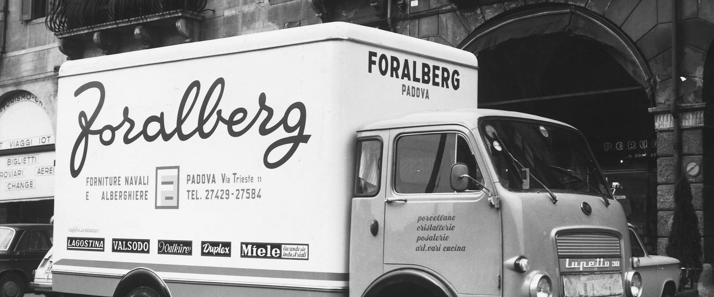
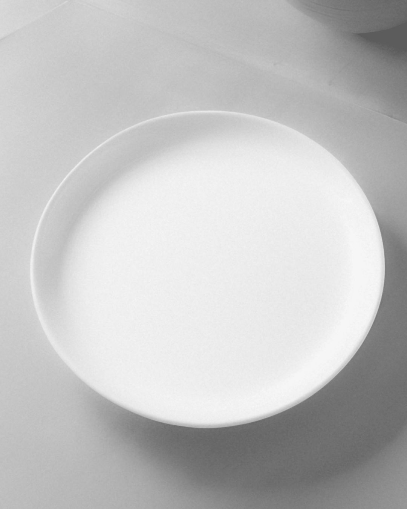
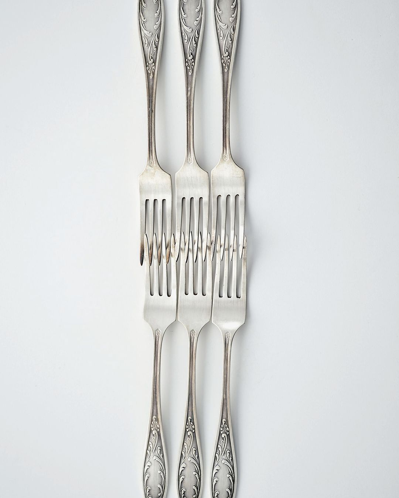
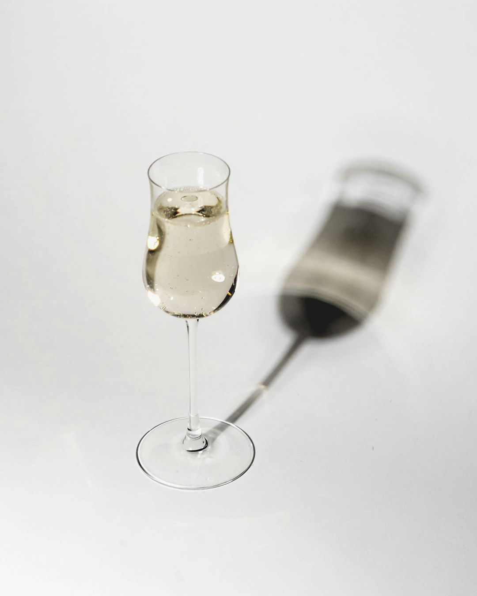
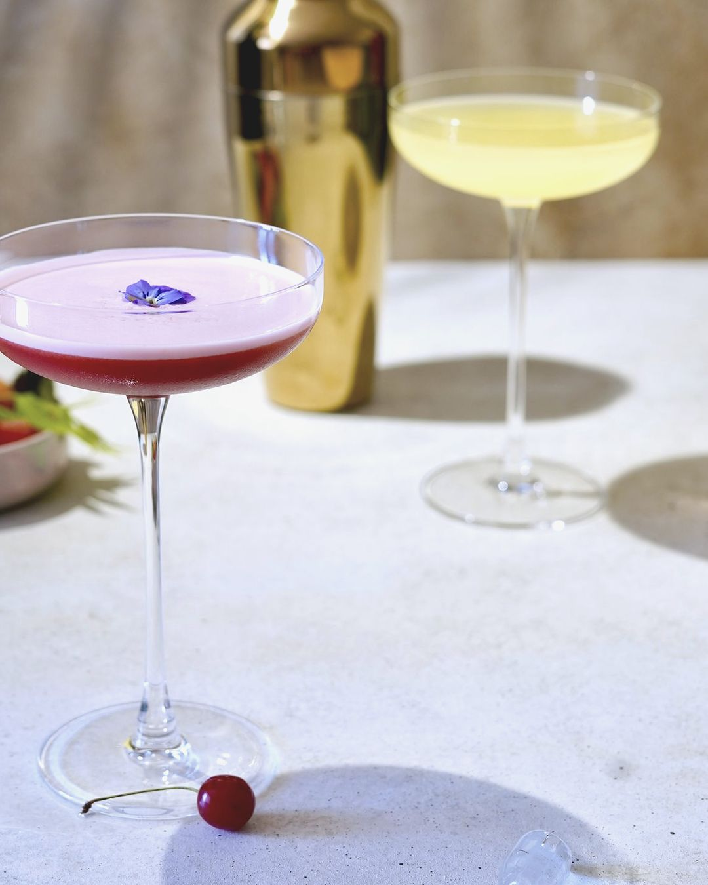
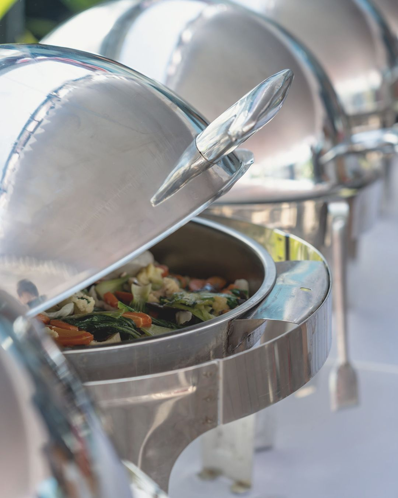
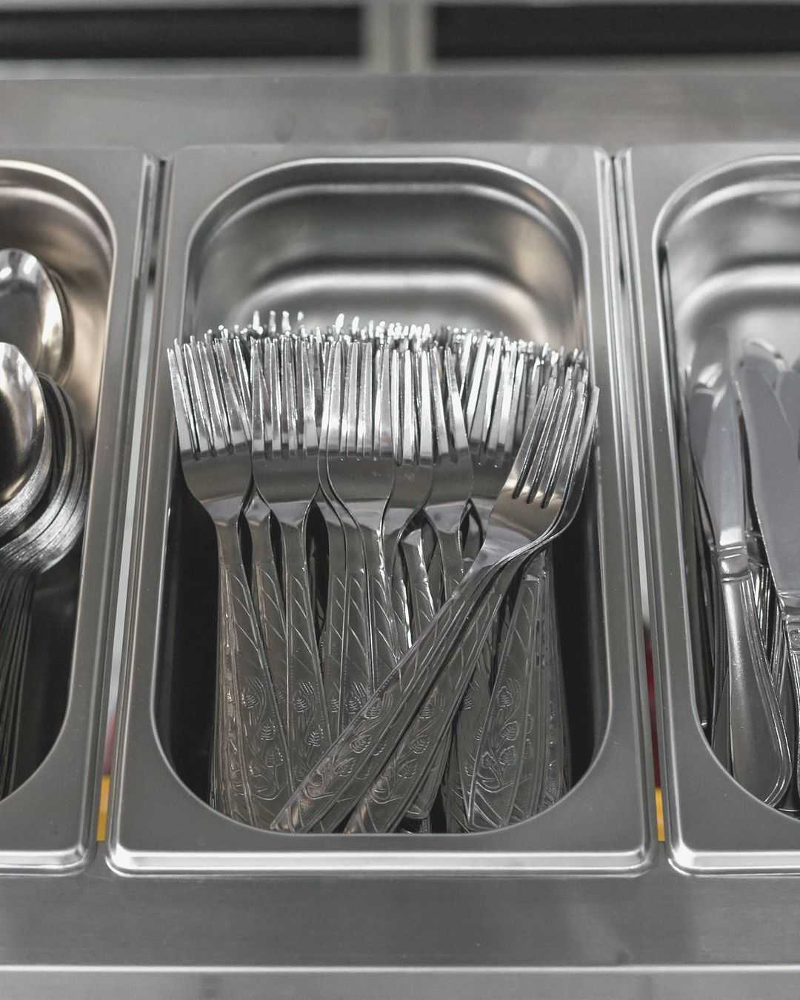
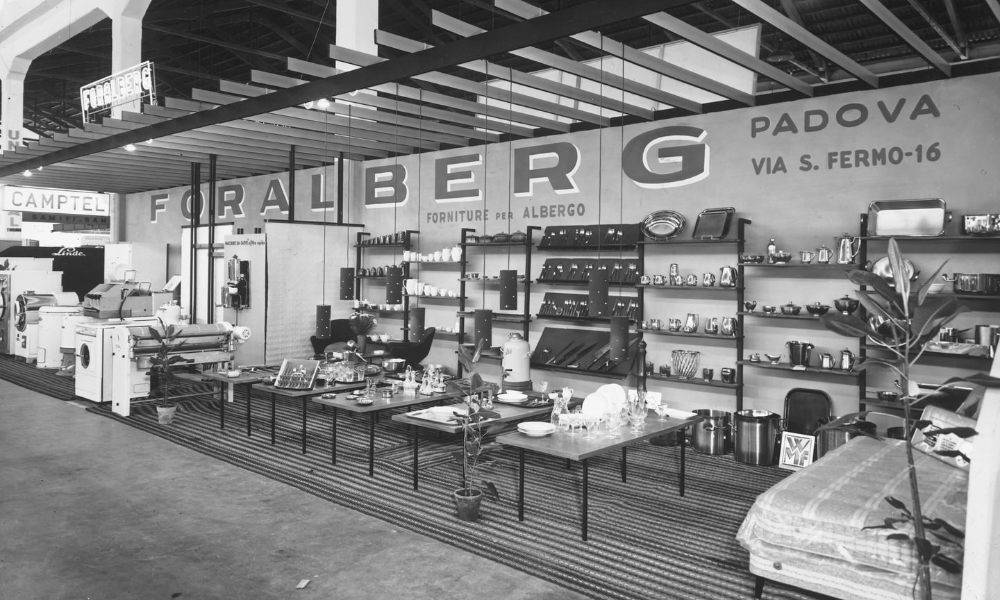

Consulenti
dell’ospitalità
Le prime consegne firmate Foralberg. Un OM Lupetto 30 sotto i portici di Padova, con l’indirizzo di via Trieste 11: la firma sul cassone è la stessa del logo di oggi.
Forniture alberghiere dal 1953: tavola, bar, buffet, cucine e impianti professionali per alberghi, ristoranti e collettività.
Lavoriamo per alberghi, ristoranti, bar, banqueting ed enti pubblici, con consegne in tutta Italia; per la PA siamo abilitati sul MePA di Consip e sui portali regionali.
- oltre800 m²di showroom in via Cile, a Padova
- oltre30.000articoli
- oltre6.000articoli in pronta consegna
- 11agenti e commerciali
Dalla tavola alla cucina, in 516 pagine
Sulla portiera del Lupetto c’era scritto: porcellane, cristallerie, posaterie, art. vari cucina. Oggi sono i capitoli del catalogo 2026/2027: sceglietene uno per vedere che cosa contiene e a che pagina si apre.
Piatti piani e fondi, bowl, tazze e teiere di Steelite, RAK, Revol e della linea Foralberg. Molti modelli si personalizzano con il marchio del vostro locale.
Apri il capitolo nel catalogo, p. 10 (PDF, 56 MB)





Dall’ascolto al piatto, un progetto su misura
Per una nuova apertura o un rinnovo seguiamo il lavoro dallo studio dell’area al render e al disegno tecnico, fino all’installazione e all’assistenza dopo la vendita.
Conosciamoci
Ascoltiamo la tua idea e iniziamo lo studio.
Il tuo progetto prende forma
Progettazione, rendering, disegno tecnico.
Fatti sorprendere
Installazione e collaudo.
Sempre tutto sotto controllo
Assistenza tecnica post vendita.
Ci piace pensare di essere più di un semplice fornitore
049 760955Servizio clienti 335 142 6521
servizioclienti@foralberg.it
Vendite e showroom
ldesiderio@foralberg.it
Via Cile 2, 35127 Padova, zona industriale
Apri la mappa
Uffici e showroom dal lunedì al venerdì, 8.30-12.30 e 14.30-18.30
